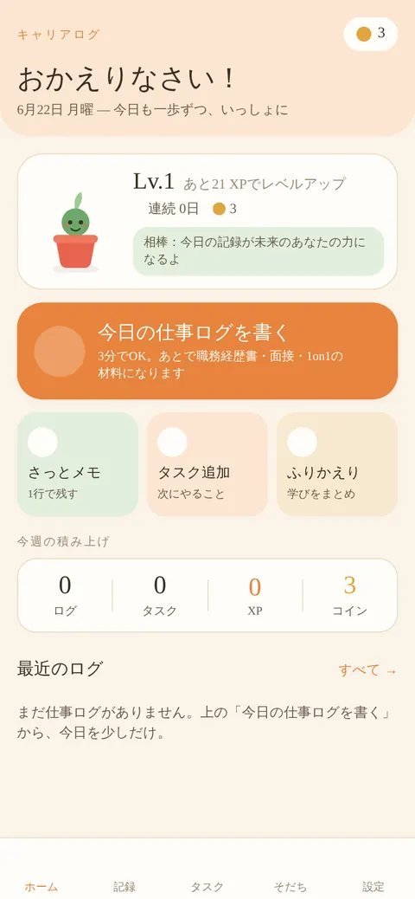
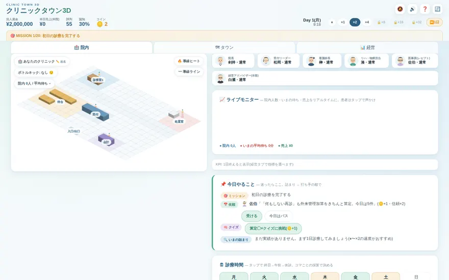

B R I D G E
Expand Choices.
選択肢を増やし、
人と社会の可能性を広げる
リハビリテーションの知見とテクノロジーで、人が自ら選び、納得して前へ進める未来をつくります。
SCROLL
The Idea — リハビリテーションの考え方
現在地を知り、選択肢を増やし、本人が納得して選べる状態をつくる。患者に使われてきたこの考え方を、BRIDGEは医療の外へ広げています。
リハビリテーション
現在地を知る
選択肢を増やす
納得して選べる
医療・組織経営
キャリア
テクノロジー
プロダクト
研究・発信
Now Building — いま、つくっているもの
Practice — 医療経営・PMI
組織を、患者と同じ型で診る
医療機関の承継・統合後の運営改善と、AIを活用した業務設計。評価・介入・再評価の循環を、組織に対して回しています。
仕事のご依頼について →

Simulation Game — Clinic Town 3D
経営を、遊びながら学ぶ
クリニック経営を街づくりゲームとして体験できるシミュレーション。診療報酬の算定まで実際の制度に沿っています。
遊んでみる →Manifesto
正解を与えるのではなく、
選択肢を増やす。
Latest Journal